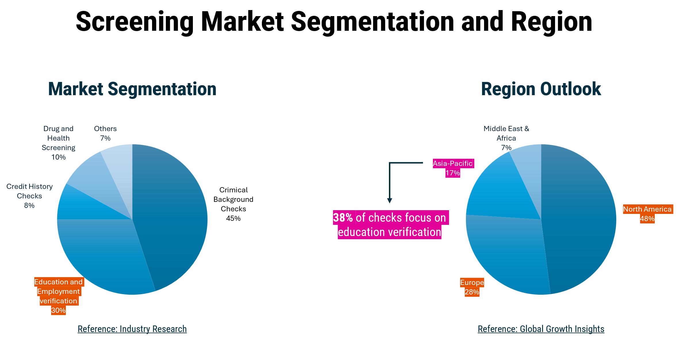
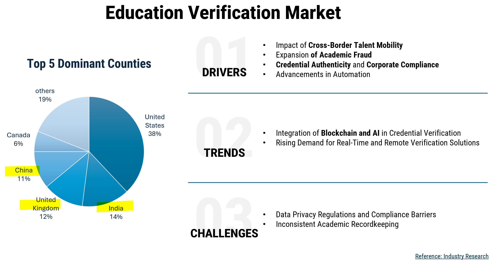
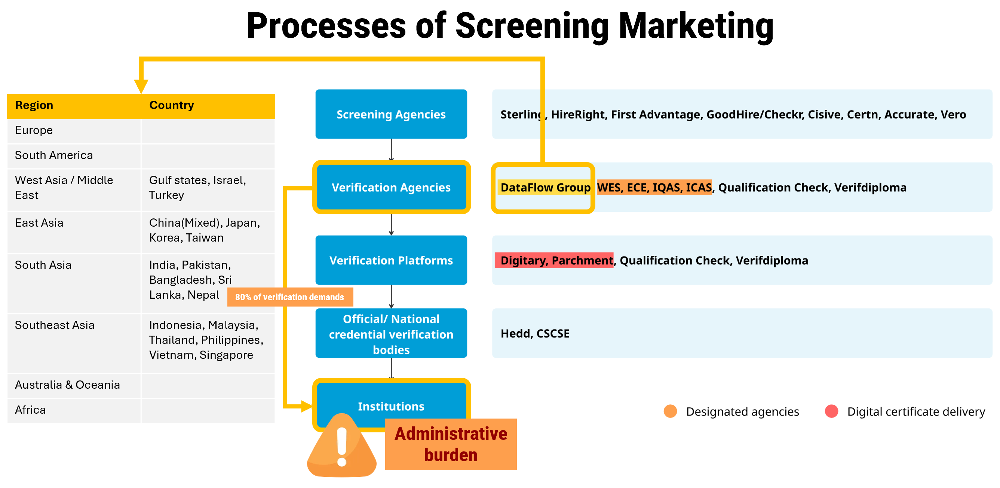
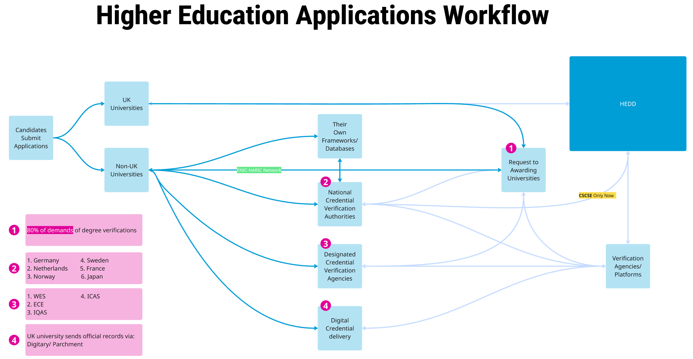
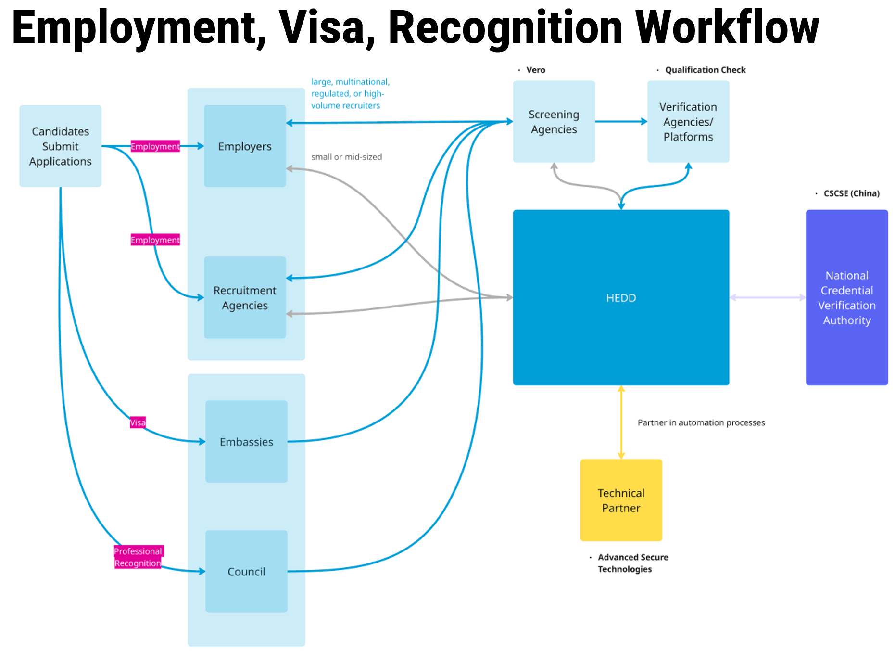
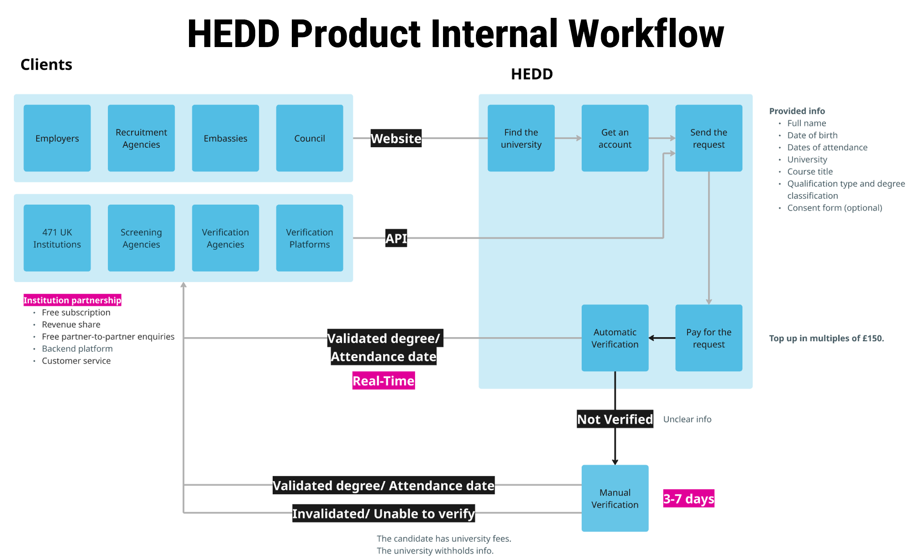

Education and employment verification represents one of the fastest-growing segments within the employment screening industry. In 2024, education and employment verification accounted for approximately 30% of the employment screening services market, second only to criminal background checks at approximately 45%. The largest markets are concentrated in the United States (38%), India (14%), the United Kingdom (12%), China (11%), and Canada (6%), highlighting significant demand across North America, Asia, and the UK.

For HEDD, these markets align closely with global talent mobility trends. The UK remains one of the world's leading destinations for international students, with China and India representing the largest source countries. Whether graduates remain in the UK workforce or return to their home countries, employers, recruitment agencies, and credential evaluators increasingly require trusted methods to validate academic qualifications across borders.
At the same time, organisations face growing challenges around academic fraud, credential authenticity, regulatory compliance, and inconsistent academic recordkeeping between institutions. These challenges create friction in recruitment and screening processes, particularly when verification requests involve multiple countries and institutions. As a result, the education verification market is rapidly evolving towards AI-assisted validation, digital credentialing, blockchain-enabled credential security, and real-time remote verification services that reduce verification delays and administrative overhead.
These trends create a favourable environment for HEDD to expand beyond its existing verification model and strengthen its position within the global credential verification ecosystem.

Despite advances in verification technology, the higher education verification process remains heavily dependent on direct communication between verification agencies and awarding institutions. Research indicates that approximately 80% of verification requests ultimately require institutions to validate academic records, creating significant administrative burdens for university registrars and student records teams.

This demand originates from a broad network of stakeholders including employers, recruitment agencies, background screening providers, credential evaluation organisations, and national recognition bodies. Major credential evaluation agencies such as WES, ECE, IQAS, and ICAS in North America, alongside large-scale verification providers such as DataFlow Group, regularly request verification information from universities to support employment, immigration, and professional accreditation decisions.
The operational challenge created by this model has led several verification providers to develop alternative approaches. Platforms such as Digitary and Parchment have introduced digital certificate delivery services that allow institutions to issue and distribute verified credentials electronically. Rather than repeatedly responding to individual verification requests, institutions can provide digitally authenticated records that can be instantly verified by authorised third parties.
The success of these solutions demonstrates growing market demand for real-time and remote verification models while highlighting an opportunity for HEDD to evolve its own service offering.
HEDD has established a strong position within the UK higher education verification market through its extensive institutional network and trusted verification infrastructure. The platform currently enables education verification requests from employers, recruitment agencies, screening providers, verification agencies, and digital verification platforms.

The platform also supports international verification requirements. In China, HEDD has partnered with the China Service Centre for Scholarly Exchange (CSCSE), the national credential recognition authority responsible for validating overseas academic qualifications. This partnership reflects the growing importance of cross-border talent mobility and demonstrates HEDD's ability to collaborate with national credential verification organisations.

However, HEDD currently relies primarily on inbound verification requests initiated by third parties. While this model generates consistent transaction volume, it positions HEDD primarily as a verification processor rather than a broader credential management platform. Furthermore, some universities continue to operate independent verification systems and databases, while credential recognition authorities similar to CSCSE exist across European countries including Germany and the Netherlands. These developments suggest opportunities for HEDD to strengthen interoperability and expand internationally.
HEDD currently provides verification services through both its web application and API integrations. Verification agencies and employers can submit verification requests directly through the platform or automate requests through API connections.
Following payment, the platform attempts to verify credentials automatically and returns key information including degree title and attendance dates. Where records cannot be verified automatically, requests are escalated for manual review with the awarding institution. This process typically requires three to seven working days depending on institutional response times.

The strength of this model lies in HEDD's extensive network of 471 partner institutions and established relationships with screening agencies, verification providers, and credential platforms. However, the workflow also highlights a key scalability challenge: manual verification remains dependent on university response processes. As transaction volumes continue to increase, reducing reliance on manual verification presents a significant opportunity to improve efficiency, customer experience, and profitability.
From a broader organisational perspective, HEDD plays an important role in supporting Jisc's Vision 2030 objective of achieving greater financial sustainability and commercial focus.
According to Jisc's Annual Review 2023/24, more than 230,000 verifications were processed through HEDD during the reporting year. Based on HEDD's standard verification fee of approximately £14 per transaction, this represents an estimated annual revenue of at least £3.2 million, excluding premium services, enterprise agreements, and additional commercial partnerships.
The volume of transactions demonstrates strong market demand and validates HEDD's position within the verification ecosystem. However, it also highlights an opportunity to diversify revenue streams beyond individual verification requests and increase the lifetime value generated from existing institutional relationships.
Within the wider Jisc portfolio, Prospects supports students and graduates through career exploration and employment preparation, while Luminate provides labour market insights, networking opportunities, and career development resources. Together, these services cover key stages of the graduate journey. Integrating HEDD's verification capabilities into this ecosystem could create a more seamless pathway from education to employment, while opening opportunities for cross-product engagement and commercial growth.
The strongest product opportunity is the introduction of digital certificate delivery services inspired by successful market offerings from Digitary and Parchment.
Because approximately 80% of verification requests ultimately require institutions to validate records, enabling universities to issue secure digital credentials directly through HEDD could significantly reduce administrative workload while accelerating verification turnaround times. Employers and screening agencies would gain access to instantly verifiable credentials, while universities would experience fewer repetitive verification requests.
In addition to improving operational efficiency, digital credential delivery would create a new commercial offering for institutional partners and strengthen HEDD's position within the emerging digital credential market.
HEDD already possesses the technical infrastructure required to support large-scale verification through APIs. This creates an opportunity to increase transaction volume by expanding partnerships with third-party screening agencies, HR technology providers, recruitment platforms, and credential verification organisations.
Beyond existing UK partnerships, expansion into North American and Asian markets would allow HEDD to leverage its established institutional network while accessing regions that collectively account for the majority of global education and employment verification demand. Because the underlying platform infrastructure already exists, this strategy offers a relatively low-cost path to international growth.
As part of the Prospects portfolio, HEDD is uniquely positioned to support graduates throughout the entire employment journey rather than solely at the verification stage.
A more integrated ecosystem connecting career guidance, employability services, labour market insights, and education verification would strengthen customer retention and create additional commercial opportunities across Jisc's product portfolio. This approach would also differentiate HEDD from competitors focused solely on verification by positioning it as part of a broader graduate success platform.
Collectively, these initiatives would reposition HEDD from a transaction-based verification service into a scalable digital credential and employability platform.
Digital credential delivery would reduce institutional workload, improve verification speed, and create new revenue opportunities. Expanded API partnerships would increase verification volumes while efficiently leveraging existing infrastructure. Integration with Prospects and the wider Jisc ecosystem would strengthen market differentiation and support long-term commercial sustainability.
By capitalising on global talent mobility, increasing compliance requirements, and the industry's shift toward digital verification, HEDD has a clear opportunity to extend its market reach, strengthen its competitive position, and deliver sustainable revenue growth while improving verification experiences for institutions, employers, and graduates.